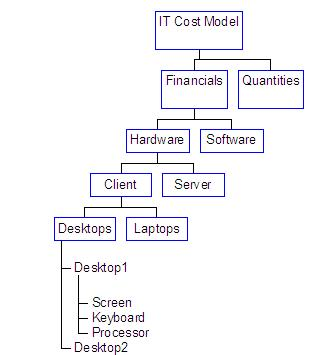

| Artifact: IT Cost Model (BUS 430) |
 |
|
The IT Cost Model is used for one or more of the following:
During the course of a single study the cost model may be used for any or all of these reasons. |
| Main Description | The IT Cost Model is typically (but not exclusively) required when considering:
This is a generic list, in real engagements the objectives, focus and scope determines the details of the model required, identifying the “from” and “to be”, states that will be modeled. For example: Server Consolidation
Technology platform comparison
The Data elements do not just include standard costs of assets and resources. They will include at least some of the following:
The Structure groups related data elements to facilitate ease of reading and analysis. Data items can be viewed as a multi-level hierarchy, of which only the top levels are used in the cost model: 
The formulas contained in the model perform the calculations required to provide the appropriate analysis, this is typically in the form of key ratios such as hardware cost per desktop (e.g. total of hardware costs data items divided by total number of hardware client desktops). |
|||||||||||||||||||||||||||||||||||||||||||||||||||||||||||||||||||||||||||||||||||||||
|---|---|---|---|---|---|---|---|---|---|---|---|---|---|---|---|---|---|---|---|---|---|---|---|---|---|---|---|---|---|---|---|---|---|---|---|---|---|---|---|---|---|---|---|---|---|---|---|---|---|---|---|---|---|---|---|---|---|---|---|---|---|---|---|---|---|---|---|---|---|---|---|---|---|---|---|---|---|---|---|---|---|---|---|---|---|---|---|---|
| Brief Outline |
IT Cost Models are typically spreadsheets, following standard spreadsheet formats and conventions. If intermediary
worksheets (see Description section) are used then the definition associated with each data item is normally included
in the worksheet and not the IT Cost Model, if this is not the case then data item descriptions should be included in
the cost model or as a supplementary document.
Note:
Formulas are contained within the structure and follow standard spreadsheet notation. Assumptions are listed separately (normally on another worksheet within the spreadsheet)as text items. |
|
| Impact of not having | The IT Cost Model is required to capture and analyze IT costs, without this work product this will not be possible. |
|---|---|
| Reasons for not needing | The only reason for not needing this work product is if the Task being performed does not require IT costs to be analyzed. |
| Guidelines | |
|---|---|
| Supporting Materials | |
| Estimation Considerations |
| © Copyright IBM Corp. 1987, 2012 All Rights Reserved Property of IBM These materials are intended only for use as part of an IBM engagement |